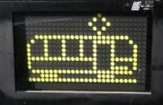
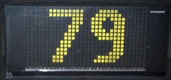
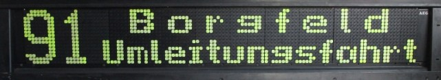
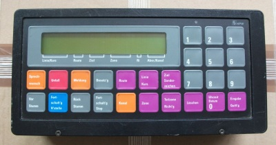
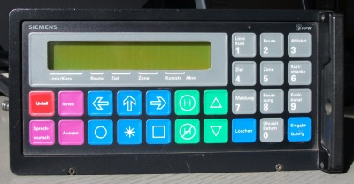
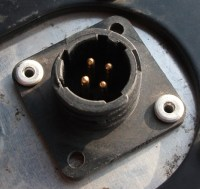
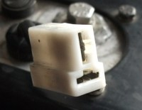
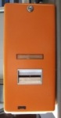
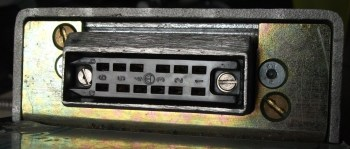
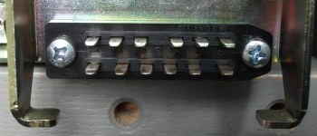

In öffentlichen Verkehrsmitteln gibt es eine Vielzahl technischer Geräte, Entwerter, Fahrscheindrucker, Ziel-, Linien- und Rollbandanzeiger sowie akustische Systeme (Haltestellenansagen), u.a. Der folgende Text enthält einige technische Informationen zu diesem Thema.



Der IBIS-Wagenbus verbindet diese Geräte miteinander.
Die Verkabelung besteht im wesentlichen aus 4 Leitungen (Sende- und Antwortbus mit jeweils einer eigenen Masseleitung). Die Stromversorgung (24 Volt) erfolgt separat.
Ein Steuergerät, der Bordrechner arbeitet als einziger Master im System. Der Master versendet periodisch (z.B. alle 10 Sekunden) Datensätze an die IBIS-Geräte (Slaves), und versorgt sie mit Daten. Es gibt zwei Datenrichtungen wobei der Sendebus der Wichtigste ist. Den Antwortbus verwenden die IBIS-Geräte um auf Statusanfragen vom Master zu antworten.
Sehr weit verbreitet ist das MAS2/3 von Siemens/HPW in unterschiedlichen Ausführungen.


Diese Geräte lassen sich nicht so ohne weiteres konfigurieren, also um eigene Routen, Haltestellen- und Zieltexte erweitern. Es wird eine spezielle Software sowie die Hardware für den Datentransport benötigt, welche Verkehrsunternehmen besitzen. Eine Direkteingabe der Daten am Gerät ist nicht vorgesehen.
Eine PC-Software zum Erstellen einer einfachen Datenversorgung für das MAS3 die ich selbst geschrieben habe, ist hier erhältlich.
IBIS-Geräte (z.B. Anzeigen) verwenden meist 4-polige CPC Buchsen / Stecker:


Für die Stromversorgung verwendet man i.d.R. solche Stecker. Der untere Kontakt ist dabei Masse, der Obere +24V. Im Inneren befinden sich zwei gewöhnliche Flachstecker / Flachsteckerhülsen, welche z.B. im Baumarkt erhältlich sind. Manche Anzeigen haben zwei solcher Anschlüsse, wobei einer das Gerät selbst und ein anderer die Leuchtstoffröhre versorgt.
Entwerter verwenden 12-polige Feder- und Messerleisten nach DIN-41622 (siehe unten):



(c) 2011 - 2013 Stephan Schütt, Alle Angaben ohne Gewähr. Vervielfältigung verboten.